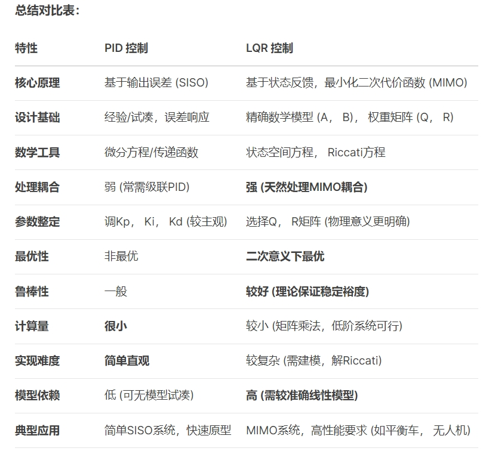

一、用PID和LQR控制平衡小车的区别
来看看deepseek描述：

二、实物部署
基于上一节LQR的代码，我们只要将相关计算公式用离散位置式PID的公式代替即可。
其中离散位置式PID的数学公式如下：
在stm32代码中表示如下,以角度环为例：
1
2
3
4
5
6
7
8
9
10
|
/* ---------- PID 计算函数 ---------- */
float pid_ang_update(PID_t *pid, float err, float dt)
{
float out;
pid->integral += err * dt;
float derivative = (err - pid->prev_err) / dt;
out = pid->kp * err + pid->ki * pid->integral + pid->kd * derivative;
pid->prev_err = err;
return out;
}
|
位置式PID直接输出控制量的绝对值（非增量）,可直接作用在电机的控制上，这里和LQR控制也有本质区别。
PID的控制原理是“误差反馈 + 经验调参”，控制平衡车的本质是控制加速度，但我们只能通过控制速度来控制加速度，所以PID公式输出的控制量是电机的速度大小。
LQR的控制原理是“状态反馈 + 模型优化”,在它的动力学模型里就已将力矩作为他的输入输出。
所以在PID控制的平衡小车里还需要将mit控制改为速度控制。
1
2
3
4
5
6
7
8
9
10
11
12
13
14
15
16
17
18
19
20
21
22
23
24
25
26
27
28
29
30
31
32
33
34
35
36
37
38
39
40
41
42
43
44
|
void ChassisR_task(void)
{
while(INS.ins_flag==0)
{//等待加速度收敛
osDelay(1);
}
ChassisR_init(&chassis_move);
while(1)
{
chassisR_feedback_update(&chassis_move,&INS);//更新数据
out_ang = pid_ang_update(&pid_ang, 0.03f-chassis_move.myPithR, 0.002);
out_x = pid_x_update(&pid_x, chassis_move.x_set-chassis_move.x, 0.002);
out_vel = pid_vel_update(&pid_vel, chassis_move.v_set-chassis_move.v, 0.002);
chassis_move.wheel_motor[0].wheel_T = out_ang - out_x + out_vel;
out_gyr = pid_gyr_update(&pid_gyr, chassis_move.turn_set-INS.Gyro[2], 0.002);
chassis_move.wheel_motor[1].wheel_T=-chassis_move.wheel_motor[0].wheel_T-out_gyr;
chassis_move.wheel_motor[0].wheel_T=chassis_move.wheel_motor[0].wheel_T-out_gyr;
scaled_down(&chassis_move.wheel_motor[0].wheel_T, &chassis_move.wheel_motor[1].wheel_T,-50.0f,50.0f);
if(chassis_move.start_flag==1)
{
speed_ctrl(&hfdcan1,0x01,chassis_move.wheel_motor[0].wheel_T);
osDelay(CHASSR_TIME);
speed_ctrl(&hfdcan1,0x02,chassis_move.wheel_motor[1].wheel_T);
osDelay(CHASSR_TIME);
}
else if(chassis_move.start_flag==0)
{
speed_ctrl(&hfdcan1,0x01,0);
osDelay(CHASSR_TIME);
speed_ctrl(&hfdcan1,0x02,0);
osDelay(CHASSR_TIME);
}
}
}
|
在代码中将直立环、位置环、速度环、转向环分别计算再按正负号进行累加，这里的wheel_motor[*].wheel_T代表的是速度。
三、错将PID输出作为力矩
如果将PID输出作为力矩量输送给mit，经过调试也能实现直立行走的功能，但人为干扰的时候明显没速度控制的反应 “硬”，且因为单位的不同，PID的数值大小差距也会较大。
所涉及资料都已放在github，有需要可自行下载。
所用代码、BOM及3D文件
https://github.com/wenke-chen/DM-segway
其中
lqr算法的平衡小车代码《DM-car-lqr》
pid算法的平衡小车代码《DM-car-pid》
pid算法输入到力矩的平衡小车代码《DM-car-pid-torque》